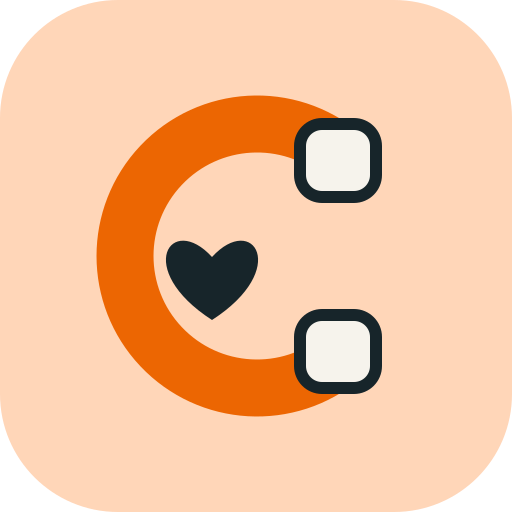

We are Aloha Robotics.
We root for the invisible underdogs
who keep hospitals running.
They deserve technology
they don’t fear — but love to use.
Every mood is
a data point.
Not a gimmick. You feel responsible
for your C-arm.

“Nobody has connected me for days. Is anyone out there?”

Plug me in! My security patch is waiting.

Now we have the physical.
Introducing
the invisible.
Lena’s phone
X-ray nurse · selected circle for Cio
Plug in C-03 in Corridor B · 20 min · tonight 19:10–21:10
- When19:10–21:10
- Effort20 min · plug in, stay near
- Why youtrained on C-arms · 40 m away
costs nothing.
Asking 6 people nearby…
Cio Send the invisible helper →
Send the invisible helper →Do I have everything?
- Check
- Find
- Dock
- Wake
- Safe?
- Start
- Update
- Report
Patch on board. Cable packed. Battery 82 %.
Lena’s phone
She couldn’t walk over.
Thirty seconds on the phone are enough.
Right time?
Care has right of way. Take a moment to review Cio’s window.
- Window19:10–21:10
- Next case21:40
- Polytraumanone incoming
- Expected update18 min
- BackupFritzi · available
Surroundings OK?
The helper connects. A person confirms.
KETTYBOT CAMERA · LIVEC-03 CIO · CORRIDOR BStart the update.
A human starts every update. This one is yours.

Update started
by Lena · 19:10 · logged in the audit trail
starts every
update.
Update running.
- Check
- Find
- Dock
- Wake
- Safe?
- Start
- Update
- Report

Cio checks the manufacturer signature itself. The robot is only the courier.
On to the next job — C-04closed.
New data from Cio: version, logs, health. Next window ready.
You helped from afar. Team streak +1 ♥
Three minutes only
scratch the surface.
We believe robots will be everywhere in hospitals —
sooner than we think.
Let’s brainstorm.
- 1Status dataWhat Smart Remote Services can already read
- 2A C-arm to testin the training center, with KettyBot
- 3A pilot1 hospital · 4–6 C-arms · 8 weeks, no robot needed to start
Aloha-Robotics-HH2.0
Aloha Robotics · pitch controls
The black screen is standby: press → to start the film. During the film, press → twice to skip it.